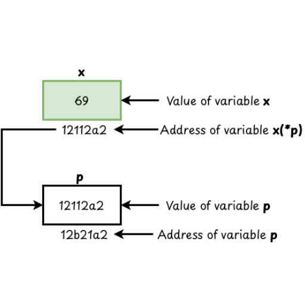

Review of C programming Concept
- C language is a general-purpose, high-level and one of the powerful programming languages that was developed by Dennis Ritchie in 1972.
- It was invented to write an operating system called UNIX.
- It is Procedure Oriented, Structured language which helps improve code readability, maintainability, and debugging.
-
WAP to input name, age and salary and print them on screen.
#include<stdio.h> int main() { char name[50]; int age; float salary; printf(" Enter name age and salary.. \n "); scanf(" %s%d%f ", name, &age, &salary); printf("The entered name is %s age is %d and the salary is %.2f ",name, age, salary); return 0; } -
WAP in C that reads marks of five subjects and calculates total marks and percentage. Also display the division.
#include<stdio.h> int main() { int mth, com, eng, soc, opt, obtainmrks; float p; printf("Enter obtained marks on each sub.. \n"); scanf(" %d%d%d%d%d" , &mth , &com, &eng, &soc, &opt); obtainmrks = mth + com + eng + soc + opt; p=((float)obtainmrks/500)*100 ; printf("Total marks is %d and Total percent is %.2f \n", obtainmrks, p); if (p>=75){ printf ( " Distinction" ); } else if ( p>=60 && p<75){ printf(" First Division "); } else if ( p>=45 && p<60){ printf (" Second Division" ); } else if(p>=30 && p<45){ printf ( "Third division" ); } else printf ("Failed"); return 0; } -
WAP to display the following Fibonacci series starting from 5 upto Nth term.
#include<stdio.h> int main() { int n, i; int a = 5, b = 6, nextTerm; printf("Enter the number of terms: "); scanf("%d", &n); printf("Fibonacci series: %d %d ", a, b); for (i = 3; i <= n; i++) { nextTerm = a + b; printf("%d ", nextTerm); a = b; b = nextTerm; } return 0; } -
WAP to check palindrome or not.
#include<stdio.h> int main(){ int n, temp, sum = 0, rem; printf("Enter a number \n"); scanf("%d", &n); temp = n; while(n!=0){ rem = n%10; sum = sum*10 + rem; n = n/10; } if(temp == sum){ printf("The entered number is palindrome"); } else printf("Not palindrome"); return 0; } -
WAP to input the age of 20 students and count the students in between 20 to 25.
#include <stdio.h> int main() { int age[20], i, count = 0; for ( i = 0; i < 20; i++) { printf ("Enter age of student %d: ", i + 1); scanf("%d", &age[i]); } if(age[i] >= 20 && age[i] <= 25) { count++; } printf("Number of students with age between 20 and 25: %d\n", count); return 0; } -
WAP to input n numbers and sort them ascending.
#include<stdio.h> int main() { int i, j, n, temp, arr[n]; printf("How many numbers do you want to sort? \t"); scanf("%d", &n); printf("Enter elements of array:---- \n"); for(i=0; i<n; i++) { printf("Enter %d element \t",i+1); scanf("%d",&arr[i]); } for(i=0; i<n-1; i++) { for(j=i+1;j<n; j++) { if(arr[i]>arr[j]) { temp=arr[i]; arr[i]=arr[j]; arr[j]=temp; } } } printf("The elements after sorting are:--\n"); for(i=0; i<n; i++) { printf("%d \t",arr[i]); } return 0; } -
WAP for taking n input names from users and sorting them in alphabetical order.
#include<stdio.h> #include<string.h> int main() { int i, j; char str[4][10]; char temp[100]; printf("Enter names that you want to sort..\n"); for(i=0;i<4;i++) { printf("Enter %d name \t",i+1); scanf("%s", str[i]); } for(i=0;i<4;i++) { for(j=i+1;j<4;j++) { if(strcmp(str[i],str[j]) > 0) { strcpy(temp, str[i]); strcpy(str[i], str[j]); strcpy(str[j], temp); } } } printf("Names After sorting are...\n "); for(i=0;i<4;i++) { printf("%s \t", str[i]); } return 0; }
Function
- Function is simply defined as the block of codes which is used to perform some specific tasks.
- Functions are also called modules or procedures because by using the concept of function we can break down the large and complex program into short modules.
- Every C program has at least one function and that is main() which serves as the entry point of a program from which the execution of a program begins.
Types of Function
-
Library Function
- C programming language library functions are those functions which are pre-defined in the library of the C.
- Each library function has their specific meaning and is included in the compiler package so these functions are also called Inbuilt Function.
- Ex.. printf() , scanf() , pow() , sqrt() , strcmp() , strcpy() etc.
- To use these functions in the program the user has to use associate header files.
- If the user has to scan and print data then printf(), scanf(), functions are used. So to use these functions users have to include #include<stdio.h>
- Similarly, to use string function like strcmp(), strlen(), strcpy() etc. we have to use #include<string.h> header file.
-
Mathematical functions like sqrt() , pow() , sin() , cos(), log() etc. we have to use #include<math.h>
// C program to illustrate inbuilt function #include<stdio.h> #include<math.h> int main() { double number, squareroot; number=49; squareroot=sqrt(number); printf("The square root of %.2f = %.2f", number, squareroot); return 0; }// C program to find the length of string #include<stdio.h> #include<string.h> int main() { char name[100]; int len; printf("Enter name: "); scanf("%s", name); len = strlen(name); printf("The length of the entered string is %d\n", len); return 0; }
-
User Defined Function
- User defined functions are those functions that are generally defined by the user while writing a program.
- These functions can be improved and modified according to the needs of the programmer.
-
To create a user defined function we need to declare and define our own function according to the function syntax.
// Program to find the sum of two number by using function #include<stdio.h> int sum(int x, int y); //function declaration int main() { int num1=5; int num2=10; int result=sum(num1, num2);//function call printf("The sum of %d and %d is %d",num1,num2,result); return 0; } sum(int x, int y) { //function definition return x+y; }
WAP to find the sum of two numbers by taking inputs from the user using the concept of function.
#include<stdio.h>
int sum(int x, int y); //function declaration
int main() {
int num1,num2;
printf("Enter two numbers.. \n");
scanf("%d%d", &num1,&num2);
int result=sum(num1, num2); //function call
printf("The sum of %d and %d is %d",num1,num2,result);
return 0;
}
int sum(int x, int y){ //function definition
return x+y;
}Components/Elements of function
-
The different components of function are:-
-
Function declaration
- Function declaration is also called function prototyping. A function must be globally declared in C programming to tell the compiler about the return type, function name and function parameters.
- Syntax: return_type function_name (parameter list);
- Example: int sum (int x, int y);
- Here int represents the return type of the function having name sum and x , y are the parameters with their datatypes integer.
-
Function definition
- It contains the actual statements which are to be executed.
- It is the most important aspect and control comes when the function is called.
-
Syntax:
return_type function_name(parameter_list) { // Function body(codes to be executed) } -
Example:
int sum(int x, int y){ return x+y; }
-
Function Call
- A function call is specified by the function name followed by the arguments enclosed in parenthesis and terminated by a semicolon.
- Function can be called anywhere in the program whenever required.
- Syntax: function_name (parameter list);
- Example: sum(num1, num2);
- Whenever a function is called the control passes to the function definition part where the statements or code to be executed are defined.
WAP in C to find the multiplication and division of two numbers by using the concept of function.
#include<stdio.h> int mul(int x, int y); //function declaration int div(int x, int y); //function declaration int main() { int num1,num2; printf("Enter two numbers.."); scanf("%d%d",&num1,&num2); int result1 = mul(num1,num2); //function call int result2 = div(num1, num2); //function call printf("The multiplication is %d \n",result1); printf("The division is %d",result2); return 0; } int mul(int x, int y) { //function definition return x*y; } int div(int x, int y) { //function definition return x/y; }WAP in C that can calculate and display the simple interest based on the user’s input for principle, time & rate.
#include<stdio.h> float si (float p, float t, float r); //function declaration int main() { float p, t, r; printf("Enter principal time in years and rate:- "); scanf("%f %f %f ", &p, &t, &r); float result = si (p, t, r); //function call printf(" The simple interest is %.3f ",result); return 0; } float si (float p, float t, float r) { return (p*t*r) / 100; //function definition }WAP to find the greatest number among three numbers by using a function.
#include<stdio.h> int greatest(int x, int y, int z); //function declaration int main() { int a, b, c; printf("Enter three numbers:-"); scanf("%d %d %d", &a, &b, &c); int result = greatest(a, b, c); //function call printf("The greatest number is %d", result); return 0; } int greatest(int x, int y, int z) { //function definition if(x>y&& x>z) { return x; } if(y>x && y>z) { return y; } else return z; }WAP to check whether the entered number is even or odd using a function.
#include<stdio.h> int oddevn(int a); // Function declaration int main() { int x; printf("Enter a number.."); scanf("%d", &x); oddevn(x); // Function call } int oddevn(int a) { // Function definition if(a%2==0) { printf("The entered number is even.."); } else printf("The entered number is odd"); }Types of accessing functions
-
We can divide a function into four types depending on whether parameters are passed to a function or not and whether a function returns some value or not.
-
Function with argument and return value
-
Here, an argument is passed from the calling function to the called function and there will also be a return statement in the called function.
#include<stdio.h> int sum(int x, int y); //function declaration void main() { int a, b; printf("Enter two numbers.."); scanf("%d%d", &a, &b); int result = sum(a, b); printf("Sum is %d ", result); } int sum (int x, int y) { int c; c=x + y; return c; }
-
-
Function with argument but no return value.
-
Here an argument is passed from the calling function to the called function but there is no need for a return statement in the called function.
#include<stdio.h> int sum(int x, int y); void main() { int a, b; printf("Enter two numbers.."); scanf("%d%d", &a, &b); sum(a, b); } int sum (int x, int y) { int c; c=x + y; printf("Sum is %d ", c); }
-
-
Function with no argument and with return value
-
Here an argument is not passed from the calling function to the called function but there is a return statement in the called function.
#include<stdio.h> int sum(); void main() { int result; result=sum(); printf("Sum is %d ", result); } int sum () { int a,b,c; printf("Enter two numbers.."); scanf("%d%d", &a, &b); c=a + b; return c; }
-
-
Function with no arguments and with no return value
-
Here an argument is not passed from the calling function to the called function and there is not a return statement in the called function.
#include<stdio.h> void sum(); void main() { sum(); } void sum () { int a,b,c; printf("Enter two numbers.."); scanf("%d%d", &a, &b); c=a + b; printf(" The sum is %d " , c ); }
-
-
-
Recursion and Recursive Function
- Recursion is the technique of making a function calling itself.
- The function that calls itself is known as a recursive function.
- This technique provides a way to break complicated problems down into simple problems which are easier to solve.
-
Syntax:
int main() { // code to be executed main(); } -
Example:
// WAP to calculate the factorial of a number using recursion. #include<stdio.h> int fact (int n); void main () { int a,b; printf("Enter a number.."); scanf("%d", &a); b=fact(a); printf("The factorial of a number is %d", b); } int fact (int n) { int f; if (n==1) return(1); else f=n*fact(n-1); return (f); } - This technique provides a way to break complicated problems down into simple problems which are easier to solve.
-
Syntax:
int main() { recursion(); //function call } int recursion() { //function definition recursion(); //function calling itself inside function definition } - The recursion continues to call the same function, so to prevent this issue an if-else statement or similar approach can be used and is called base condition which helps to meet the certain condition and prevent the function from continuing calling issues.
WAP to calculate the sum of natural number by using recursion.
#include<stdio.h>
int sonn(int n); //function declaration
int main() {
int num;
printf("Enter any number");
scanf("%d", &num);
int result= sonn(num); //function call
printf("The sum of first %d natural number is %d", num, result);
}
int sonn (int n) { //function definition
if (n==1){ //base case
return 1;
}
else {
return n + sonn(n-1);
}
}WAP to calculate the factorial of a number. Or, product of natural numbers.
#include<stdio.h>
int fact(int n); //function declaration
int main() {
int num;
printf("Enter any number...");
scanf("%d", &num);
int result= fact(num); //function call
printf("The factorial of %d is %d", num, result);
}
int fact (int n) { //function definition
if (n==1){ //base case
return 1;
}
else {
return n * fact(n-1);
}
}WAP to display the Fibonacci series up-to n term using a recursive function.
#include<stdio.h>
int fibo(int n);
int main() {
int n , i ;
printf("Enter a number...");
scanf("%d", &n);
printf("Fibonacci series \n ");
for(i=0; i<n; i++){ printf("%d \t", fibo(i)); }
}
int fibo(int n) {
if(n==0) {
return 0;
} else
if (n==1) {
return 1;
} else {
return (fibo(n-1)+ fibo(n-2));
}
} Concept of Storage
- In C programming storage classes define the scope (visibility) and lifetime of a variable and or a function within a C program.
-
There are four storage classes in C.
-
Automatic storage class
-
A keyword “auto” is used to define. Local to the block in which the variable is defined. Automatically created and destroyed as the block is entered and exited. If no storage class is defined, auto is default.
#include <stdio.h> void myFunction(); int main() { myFunction(); myFunction(); return 0; } void myFunction() { auto int count = 0; count++; // 'auto' is the default storage class for local variables printf("Auto variable count: %d \n", count); } - Output:-
Auto variable count: 1 Auto variable count: 1
-
Why Does This Happen?
The auto variable count is the local variable created & initialized to 0 every time myFunction is called. In the first call to myFunction, count is initialized to 0, incremented to 1, & then printed. In the second call to myFunction, count is again initialized to 0, incremented to 1, & then printed.
-
-
Register storage class
-
Register variables are similar to auto but stored in CPU registers helps faster execution. The keyword “register” is used to define.
#include <stdio.h> void myFunction(); int main() { myFunction(); myFunction(); return 0; } void myFunction() { register int count = 0; // 'count' stores in a CPU register count++; printf("Register variable count: %d \n", count); } - Output:-
Register variable count: 1 Register variable count: 1
- Why Does This Happen?
The register variable count is a local variable created and initialized to 0 every time the myFunction is called.In the first call myFunction, count is initialized to 0, incremented to 1, & then printed.In the second call myFunction, count is again initialized to 0, incremented to 1, & then printed.
-
-
Static storage class
-
The keyword “static” is used to define. Local static variables have functional scope & global static variables accessed anywhere.
#include <stdio.h> void myFunction(); int main() { myFunction(); myFunction(); return 0; } void myFunction() { static int count = 0; count++; printf("Static variable count: %d\n", count); } - Output:-
Static variable count: 1 Static variable count: 2
- Why Does This Happen?
The static variable count is initialized only once, and it retains its value between function calls.
In the first call to myFunction, count is incremented from 0 to 1 and then printed.
In the second call to myFunction, count is incremented from 1 to 2 and then printed.
-
-
External storage class
-
The extern keyword is defined. It allows global variables to be accessed between different functions or files within a program.
#include <stdio.h> int count = 0; // Definition of the external variable void myFunction(); int main() { myFunction(); myFunction(); return 0; } void myFunction() { extern int count; // Declaration of the external variable count++; printf("Extern variable count: %d\n", count); } - Output:-
Extern variable count: 1 Extern variable count: 2
- Why Does This Happen?
The extern variable count is defined globally at the beginning of the program. It retains its value throughout the entire program execution.
In the first call to myFunction, count is incremented from 0 to 1 and then printed.
In the second call to myFunction, count is incremented from 1 to and then printed.
-
Concept of Structure
- In C programming, a structure is a user-defined data type that allows you to group different datatype with a single name.
- Structure is the collection of heterogeneous data items value throughout the entire program execution.
- The keyword struct is used to declare structure and each data item inside of structure are called members of structure.
-
Steps while working with structures.
-
Define Structures:-
-
Syntax:
struct structureName { dataType member1; dataType member2; // ... }; -
Example:-
struct Person { char name[50]; int citNo; float salary; };
-
-
Create structure variable:-
-
There are two ways to create structure variables:
-
Syntax:
struct structureName variable1, variable2 …… variableN;Example:-
struct Person person1, person2; -
Syntax:
struct structureName { dataType member1; dataType member2; } variable1, variable2, variableN;Example
struct Person { char name[50]; //Example int citNo; float salary; } person1, person2;
-
-
-
Accessing member of structure
- A member of a structure can be accessed by using the period(.) sign between the structure variable and respective member.
-
Syntax:
variable.member; -
Example:
person1.salary, person2.name;
-
-
Write a program to display the name, age and salary of a person by using the concept of structure.
#include <stdio.h>
struct Person { //declare a variable of structure person
char name[30];
int age;
float salary;
};
int main() {
struct Person p1;
printf("Enter the name of the person: ");
scanf("%s", p1.name);
printf("Enter the age of person: ");
scanf("%d", &p1.age);
printf("Enter the salary of person: ");
scanf("%f", &p1.salary);
printf("\n Person Details:\n");
printf("Name: %s \n",p1.name);
printf("Age: %d \n",p1.age);
printf("Salary: %.2f\n",p1.salary);
return 0;
}Array of Structure
- In C, it can be defined as the collection of multiple structure variables where each variable contains information about different entities.
-
Syntax:
struct structure_name { datatype member_name1; datatype member_name2; }; struct structure_name arrayname[size];Write a program in C to store (Name, Address, Age and email) of 5 students by using the concept of array of structure.
#include<stdio.h> struct person { char name[20]; address[20]; email[20]; int age; }; struct person pi[5]; int main() { int i; printf("Enter records of 5 students\n"); for(i=0;i<5;i++) { printf("Enter name address email and age of %d person\n",i+1); scanf("%s%s%s%d",pi[i].name,pi[i].address,pi[i].email,&pi[i].age); } printf("The person's information are \n"); for(i=0;i<5;i++) { printf("Name:-%s \t, Address:-%s \t, Email:-%s \t, Age:-%d\n", pi[i].name, pi[i].address, pi[i].email, pi[i].age); } return 0; }Another example using static data.
#include <stdio.h> #include<string.h> struct Student { //Define a structure to hold student information int id; char name[50]; float grade; }; int main() { struct Student students[3]; //Declare an array of structures students[0].id = 1; // Initialize the first student's data strcpy(students[0].name, "Alice"); students[0].grade = 85.5; students[1].id = 2; // Initialize the second student's data strcpy(students[1].name, "Bob"); students[1].grade = 90.0; students[2].id = 3; // Initialize the third student's data strcpy(students[2].name, "Charlie"); students[2].grade = 78.2; // Print out the information of each student for (int i = 0; i < 3; i++) { printf("Student ID: %d\n", students[i].id); printf("Student Name: %s\n", students[i].name); printf("Student Grade: %.2f\n\n", students[i].grade); } return 0; }WAP to read names and addresses of students and arrange them on the basis of name in alphabetical order.
#include <stdio.h> #include<string.h> struct student { char name[20]; char address[20]; } s[100]; void sorting(int n); //function declaration int main() { int i, n; printf("How many records do you want to enter? "); scanf("%d", &n); for (i = 0; i < n; i++) { printf("Enter name and address: "); scanf(" %s %s", s[i].name, s[i].address); } sorting(n); //function call return 0; } void sorting(int n) { struct student temp; int i, j; for (i=0; i < n - 1; i++) { for (j=i + 1; j < n; j++) { if (strcmp(s[i].name, s[j].name) > 0) { temp = s[i]; s[i] = s[j]; s[j] = temp; } } } printf("Names and Addresses in alphabetical order:\n"); for (i = 0; i < n; i++) { printf("Name: %s \t Address: %s\n", s[i].name, s[i].address); } }
Concept of Union
- A union in C is a special data type that allows storing different data types in the same memory location.
- Unlike a struct, which allocates memory for each member separately, a union allocates enough memory to hold the largest member.
- Only one member of a union can contain a value at any given time. The size of a union is determined by the largest size of its largest member.
- The syntax of union is similar to the syntax of structure.
-
Syntax:
union union_name { data_type1 member1; data_type2 member2; // More members can be added as needed };WAP to find the size of the union.
#include <stdio.h> union abcd { int a; float c; double d; }; int main() { printf("The size of the union is %u bytes\n",sizeof(union abcd)); return 0; }// Example of Union #include <stdio.h> #include <string.h> // Define a union union Data { int intValue; float floatValue; char strValue[20]; }; int main() { // Declare a union variable union Data data; // Assign an integer value data.intValue = 42; printf("The integer value is: %d\n",data.intValue); // Assign a float value data.floatValue = 3.14; printf("The float value is: %f\n",data.floatValue); // Assign a string value strcpy(data.strValue,"Hello"); printf("The string value is: %s\n",data.strValue); return 0; }
Differences between Structure and Union
| Structure | Union |
|---|---|
| The struct keyword is used to define a structure | The union keyword is used to define union |
| When the variables are declared in a structure, the compiler allocates memory to each variables member The size of a structure is equal or greater to the sum of the sizes of each data member | When the variable is declared in the union, the compiler allocates memory to the largest size variable member The size of a union is equal to the size of its largest data member size |
| Each variable member occupied a unique memory space | Variables members share the memory space of the largest size variable |
| Changing the value of a member will not affect other variables members | Changing the value of one member will also affect other variable members. |
| Each variable member will be assessed at a time | Only one variable member will be assessed at a time |
| We can initialize multiple variables of a structure at a time | In union, only the first data member can be initialized |
| All variable members store some value at any point in the program | Exactly only one data member stores a value at any particular instance in the program |
| The structure allows initializing multiple variable members at once | Union allows initializing only one variable member at once |
Concept of Pointers
-
In computer science a pointer is a variable that stores the memory address of another variable meaning it “points” to the location in memory where the data is actually stored.

In C programming pointers are declared using the asterisk (*) operator.
-
Pointer Declaration
- We can declare a pointer variable likewise the normal variable declaration by
putting the
*operator before pointer variable. -
Syntax:
data_type *variable_name; -
Example:
char *p; float *q;
- We can declare a pointer variable likewise the normal variable declaration by
putting the
-
Pointer Initialization
- It is the process to assign some initial value to the pointer variable by using the (&) addressof operator to get the memory address of a variable and then store it in the pointer variable.
-
Example:
int var=10; int *ptr; ptr =&var;
-
Pointer Dereferencing
-
It is the process of accessing the value stored in the memory address specified in the pointer. We use the same (*) dereferencing operator that we used in the pointer declaration.
C program demonstrating the use of pointers
#include <stdio.h> int main() { int var = 10; int // Declare an integer variable *ptr = &var; // Declare a pointer variable and assign it the address of var printf("Value of var: %d\n", var); // Print the value of var printf("Address of var: %p\n", &var); // Print the address of var printf("Value stored in ptr: %p\n", ptr); // Print the address stored in ptr printf("Value pointed to by ptr: %d\n", *ptr); // Dereference ptr to get the value of var return 0; }
-
-
Pointer Arithmetic
- Pointer arithmetic is one of the powerful features of the C language. All the operations can not be operated on pointer variables.
- We can perform different operations like compare pointer, Increment/Decrement pointer, Add and subtract integer values from pointer.
-
We cannot perform additional operations between two pointers, multiply and division.
-
Compare Pointer
#include<stdio.h> int main() { int data[2]; int *p1, *p2, i; printf("Enter two numbers"); for(i=0;i<2;i++) { scanf("%d", &data[i]); } p1=&data[0]; p2=&data[1]; if(*p1> *p2) { printf("P1 is greater than p2 \n"); } else printf("P2 is greater than p1"); return 0; } -
Increment/Decrement on pointer
#include<stdio.h> int main() { int nums[2] = {10, 20}; int *p = nums; // Pointer to the first element of the array printf("Initial value pointed to by p: %d\n", *p); p++; // Increment pointer to point to the next element in the array printf("After incrementing pointer, value pointed to by p: %d\n", *p); p--; // Decrement pointer to point back to the first element printf("After decrementing pointer, value pointed to by p: %d\n", *p); return 0; } -
Adding/Subtracting value on pointer
#include<stdio.h> int main() { int num=50; int *p; //pointer to int p=# //stores the address of num variable printf("Address of p variable is %u \n",p); p=p+3; //adding 3 to pointer variable printf("After adding 3: new address is %u \n",p); p=p-3; printf("After subtracting 3: Address of p variable is %u \n",p); return 0; }Write a program to find the factorial of a number using a pointer variable.
#include<stdio.h> int main() { int num, i; long fact=1; printf("Enter a number:-"); scanf("%d", &num); int *ptr; ptr=# for(i=1; i<=*ptr; i++) { fact=fact*i; } printf("\n Factorial is %d", fact); return 0; }
-
Call by value(Passing by value)
- In C programming “Call by value” is the default parameter passing mechanism. When you pass arguments to a function their values are copied into the function parameters.
-
Let’s clear through an example that swap two numbers by using call by value mechanism.
#include <stdio.h> void swap(int a, int b); //function declaration void main() { int a=5,b=10; printf("Before swapping a=%d and b=%d",a,b); swap(a, b); //function call by values } void swap(int a, int b) { //function defn int t; t=a; a=b; b=t; printf("After swapping a=%d and b=%d", a,b); }
Call by reference(Passing by reference)
- It is also a parameter passing mechanism where a function receives a memory address of the actual parameter rather than a copy of its value.
- In C programming we can achieve this by using the pointers.
-
Let’s clear through the example
#include <stdio.h> void swap (int *a, int *b); //function declaration void main (void) { int a=5,b=10; printf("Before swapping a = %d and b = %d\n",a,b); swap(&a, &b); //function calling by address i.e. call by reference } void swap(int *a, int *b) { //function definition int t; t=*a; *a=*b; *b=t; printf("After swapping a = %d and b = %d\n",a,b); }
File Handling
- File or datafile is defined as the collection of data or information which is permanently stored inside secondary memory.
- File handling in C is the process in which we can perform create, open, read, write and close operations on a file.
-
C language provides different functions such as fopen(), fwrite(), fread(), fseek() etc. to perform input, output and other operations in our program.
Why do we need file handling in C?
- Reusability:- means data stored in the file can be accessed, updated and deleted whenever needed.
- Portability:- without losing any data, files can be transferred to another computer system.
- Efficient:- File handling allows you to easily access a part of a file.
- Storage Capacity:- File allows you to store a large amount of data.
Types of file in C
-
Based on the way that the file stores data, files can be classified into two types they are..
-
Text File
- A text file containing data in the form of ASCII character or textual information like components of strings or numbers that are human readable are called text files.
- Text files are simply stored with .txt extension.
-
Binary File
- It is a file that contains data in a non textual format, which means it is not directly human readable.
- Binary files store data in raw format typically using a sequence of binary digits i.e. 0 & 1. and are stored with the .bin extension.
-
File manipulation function
-
In C, there are several functions for manipulation of files, some of them are..
Function Description fopen() used to create a file or open an existing file. fclose() used to close an opened file. fprintf()/fwrite() used to write formatted output to a file. fscanf()/fread() used to read formatted input from a file. fseek() used to set the file position indicator. remove() used to delete a file. rename() used to change the name of a file.
Opening a data file
-
Syntax:
FILE *fptr; fptr = fopen(“filename”, “mode”);Where, filename can be “library.txt”, “student.txt”, “patient.txt” etc.
Modes:
- “w” = to write or store data in a file.
- “r” = to read or display data from a file.
- “a” = to add or append data in an existing data file.
- “r+” = open a text file for both reading and writing.
- “w+” = open a file for writing and reading.
- “a+” = open a file for both appending and reading.
-
Store /write data in file
-
Syntax:
fprintf(fptr," formateSpecifier", varibaleNames); -
For eg: if we want to store name, disease, age & bed no. of patient. then it can be written as:-
fprintf(fptr," %s%s%d%d", name, disease, age, bedno );WAP to create a datafile “patient.txt” & store name disease, age, and bed number of a patient.
#include<stdio.h> int main() { char name[20]; char disease[30]; int age, bedno; FILE *fptr; fptr=fopen("patient.txt", "w"); printf("Enter name, disease, age and bedno of patient \n"); scanf("%s%s%d%d", name, disease, &age, &bedno); fprintf(fptr," %s%s%d%d", name, disease, age, bedno ); fclose(fptr); return 0; }WAP to create a datafile “student.txt” and store the name, age and class of n numbers of students.
#include<stdio.h> int main() { int n, i, age, class; char name[50]; FILE *fptr; fptr = fopen("student.txt", "w"); printf("Enter the number of students:- "); scanf("%d", &n); for (i = 0; i < n; i++) { printf("Enter the student's name age and class of %d student ", i+1); scanf("%s%d%d", name, &age, &class); fprintf(fptr, "Name: %s, Age: %d, Class: %d\n", name, age, class); } fclose(fptr); printf("Data successfully written to student.txt \n"); return 0; }
-
-
Add /Append data in datafile
-
Syntax:
FILE *fptr; fptr = fopen(“filename”, “a”);A DATAFILE “patient.tst” contains name, disease, age and bed number of patients. WAP to add 5 more records.
#include<stdio.h> int main() { char name[50]; int age; float salary; FILE *fptr; fptr = fopen("employee.txt", "a"); // Open in append mode // Input details of a new employee printf("\nEnter employee details:\n"); printf("Enter name: "); scanf("%s", name); printf("Enter age: "); scanf("%d", &age); printf("Enter salary: "); scanf("%f", &salary); // Append the details to the file fprintf(fptr, "\nName: %s, Age: %d, Salary: %.2f", name, age, salary); fclose(fptr); printf("\nDetails appended successfully to employee.txt\n"); return 0; }A datafile “student.txt” contains name, class and marks obtained in 3 different subjects of a few students. WAP to add more records until the user presses “y” as per user requirements.
#include<stdio.h> int main() { char name[10], ch[3]; int class, eng, nep, math; FILE *fptr; fptr = fopen("student.txt", "a"); do { printf("Enter name class and marks on 3 subject"); scanf("%s %d %d %d %d", name, &class, &eng, &nep, &math); fprintf(fptr, "%s%d%d%d%d \n", name, class, eng, nep, math); printf("Press Y to continue"); scanf("%s", ch); } while(strcmp (ch, "Y") == 0 || strcmp(ch, "y")==0); fclose(fptr); return 0; }
-
-
Read/Display/Retrieve data from a datafile
- The fscanf() is used to read data from a datafile and return EOF at the end of file.
-
Syntax:
fscanf(fptr," formateSpecifier", varibaleNames);A datafile “student.txt” contains the name, age and class of a few students. WAP in C to read and display all records.
#include<stdio.h> int main() { char name[10]; int age, class; FILE *fptr; fptr = fopen("student.txt", "r"); printf("Name Class Age \n"); while (fscanf(fptr, "%s %d %d", name, &class, &age) != EOF) { printf("%s %d %d \n", name, class, age); } fclose(fptr); return 0; }WAP in C to enter Id, name and post of the employee and store them in datafile “emp.txt”. display each record on the screen.
#include<stdio.h> int main(){ int num, id, i; char name[10]; char post[10]; FILE *file; file = fopen("emp.txt", "w"); //open file in write mode printf("Enter the number of employees: "); scanf("%d", &num); for (i = 0; i < num; i++) { printf("Enter id name and post for employee %d\n", i + 1); scanf("%d%s%s", &id,name,post); fprintf(file, "%d %s %s\n", id, name, post); } fclose(file); file = fopen("emp.txt", "r"); //open file in read mode printf("\nEmployee Records:\n"); while (fscanf(file, "%d %s %s", &id, name, post) != EOF) { printf("ID: %d, Name: %s, Post: %s\n", id, name, post); } fclose(file); return 0; }WAP in C to enter Id, name and post of the employee to store in a datafile “emp.txt”. Display each record by using the concept of structure.
#include<stdio.h> #include<string.h> struct Employee { int id; char name[50]; char post[50]; }; int main() { FILE *file; struct Employee emp; int num, i; // Open file in write mode file = fopen("emp.txt", "w"); if (file == NULL) { printf("Error opening file!\n"); return 1; } printf("Enter the number of employees: "); scanf("%d", &num); for (i = 0; i < num; i++) { printf("\nEnter details for employee %d:\n", i + 1); printf("ID: "); scanf("%d", &emp.id); printf("Name: "); scanf("%s", emp.name); printf("Post: "); scanf("%s", emp.post); // Write the structure to file fwrite(&emp, sizeof(struct Employee), 1, file); } fclose(file); printf("\nData written to emp.txt successfully.\n"); // Open file in read mode file = fopen("emp.txt", "r"); if (file == NULL) { printf("Error opening file!\n"); return 1; } printf("\nEmployee Records:\n"); printf("%-5s %-20s %-20s\n", "ID", "Name", "Post"); printf("----------------------------------------------------\n"); // Read and display records while (fread(&emp, sizeof(struct Employee), 1, file)) { printf("%-5d %-20s %-20s\n", emp.id, emp.name, emp.post); } fclose(file); return 0; }Same program by using w+ mode…
#include<stdio.h> #include<string.h> struct Employee { int id; char name[50]; char post[50]; }; int main() { FILE *file; struct Employee emp; int num, i; // Open file in write mode file = fopen("emp.txt", "w+"); if (file == NULL) { printf("Error opening file!\n"); return 1; } printf("Enter the number of employees: "); scanf("%d", &num); for (i = 0; i < num; i++) { printf("\nEnter details for employee %d:\n", i + 1); printf("ID: "); scanf("%d", &emp.id); printf("Name: "); scanf("%s", emp.name); printf("Post: "); scanf("%s", emp.post); // Write the structure to file fwrite(&emp, sizeof(struct Employee), 1, file); } // Rewind to the beginning of the file rewind(file); printf("\nEmployee Records:\n"); printf("%-5s %-20s %-20s\n", "ID", "Name", "Post"); printf("----------------------------------------------------\n"); // Read and display records while (fread(&emp, sizeof(struct Employee), 1, file)) { printf("%-5d %-20s %-20s\n", emp.id, emp.name, emp.post); } fclose(file); return 0; }
File Access Methods in C
-
On the basis of how we read and write data or information to files, file accessing can be divided into two types :-
-
Sequential File Access
- It is the simplest way of reading data from a file and writing data in a file.
- In sequential access we can write variables one after another and also while reading data from a file we can read one variable after another.
- In simple words it allows us to access data from file one after another i.e. in sequence manner.
- In the sequential file access method suppose if you want to access the 5th record, then you must have to read the first 4 records then only you can access the 5th record.
-
Random File Access
- The other way in which we can access data randomly to and from file is called random file access method.
- It is more faster & more effective method of accessing data as compared to the sequential method.
- To achieve random access C defines a set of functions like fseek(), rewind(), ftell() etc.
-